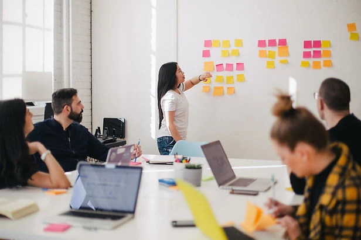
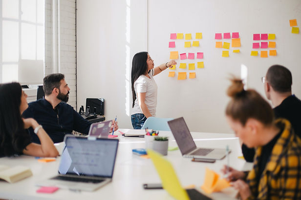
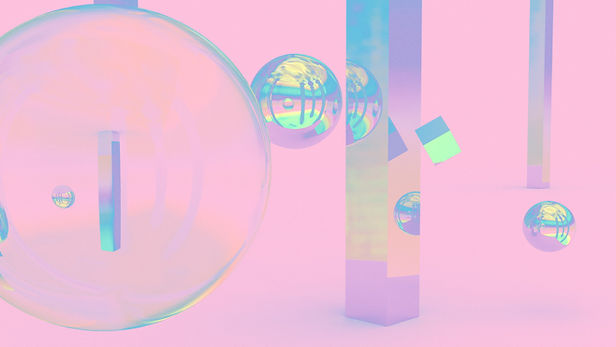
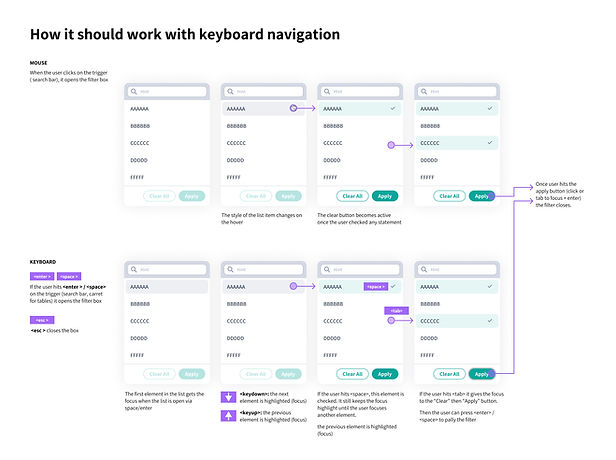
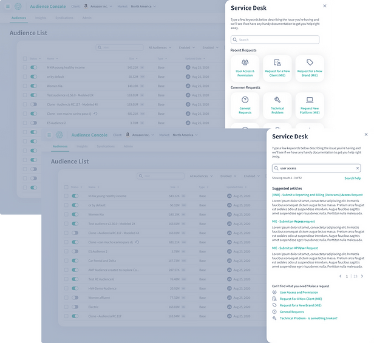

Other Highlights
A set of UX leadership, accessibility, innovation, and service-desk moments from my time helping shape product design at Kinesso.

Smaller proof points from the same enterprise UX period.
- Design leadershipJoining as the second product-design hire and helping grow a diverse international team.
- Innovation challengeLeading a trio that secured second place in the 2021 Engine+ Innovation Challenge.
- AccessibilityHelping establish early accessibility direction and standards for Splash.
- Service desk panelTurning user and support-team feedback into an integrated help-desk concept.

The product-design team grew from early foundation to international scale.
Joining Kinesso's Product Design team as the second hire carried both opportunity and responsibility. The team grew into a diverse, 30-member international group built around client needs and design standards.
- Team growthThe product-design function expanded from a small foundation into a larger global team.
- StandardsThe work required setting expectations for design excellence as the team scaled.
- Client fitThe team structure had to meet diverse client and product needs.

An accessibility panel concept earned second place and executive attention.
I led a passionate trio that secured second place in the 2021 Engine+ Innovation Challenge. The proposal, an advanced accessibility panel, caught the attention of IPG's global CEOs and later led to guidance for the next wave of innovators.
- ConceptAn advanced accessibility panel designed to make accessibility more actionable inside product work.
- RecognitionThe concept placed second and received attention from IPG global CEOs.
- Follow-throughThe next year, I was tapped to counsel and guide the next wave of innovators.

Accessibility became a product-standard problem, not a side topic.
Accessibility in design is complex and evolving. A dedicated subset of the team began laying early paths toward a comprehensive accessibility playbook for Splash.
- StandardsThe aim was to bring clarity and standards into the design system.
- Keyboard navigationThe source work included concrete interaction guidance for focus, search, and keyboard behavior.
- InclusionThe effort kept users at the heart of the system instead of treating accessibility as an afterthought.

User and support-team needs converged into one integrated panel.
Users wanted an integrated Help Desk feature, while the Help Desk team needed streamlined input processes. Through collaborative discussion and iteration, the concept married both needs.
- User needUsers wanted support access closer to the product experience.
- Team needThe support team needed cleaner intake and input processes.
- Product responseThe panel concept connected both sides in one product surface.
Some UX proof lives in the systems around the main product.Design leadership, accessibility, innovation, and service workflows